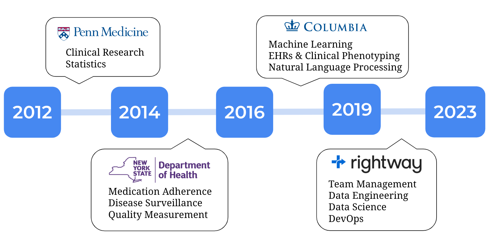

Career
My 11 year-long career in data has oscillated between academic and industry. It has been a blast to learn so many different things and operate in such distinct environments.
Career
At Columbia during my PhD in Biomedical Informatics I was mentored by Noemie Elhadad, with whom I worked on machine learning and NLP, and Lena Mamykina, with whom I worked on data visualization and human-computer interaction.

Career
I live in Portland, Maine with my wife Keziah Weir. Together we ski, surf, and forage for wild mussels. My favorite thing to do is home renovation projects.